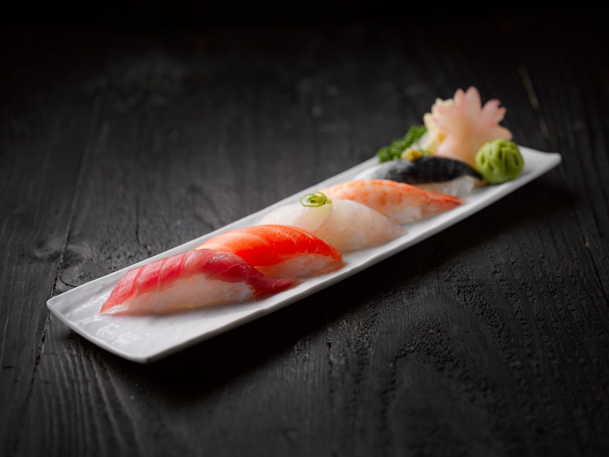
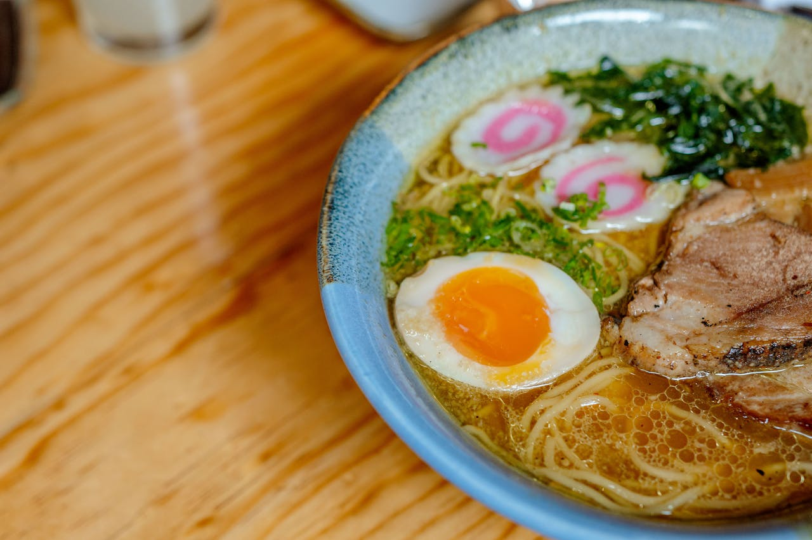
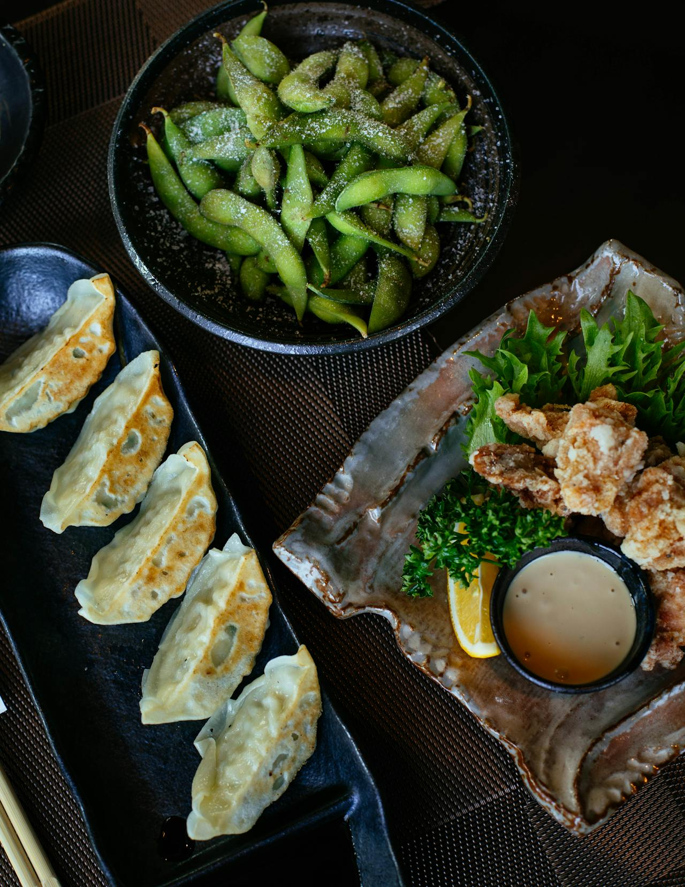
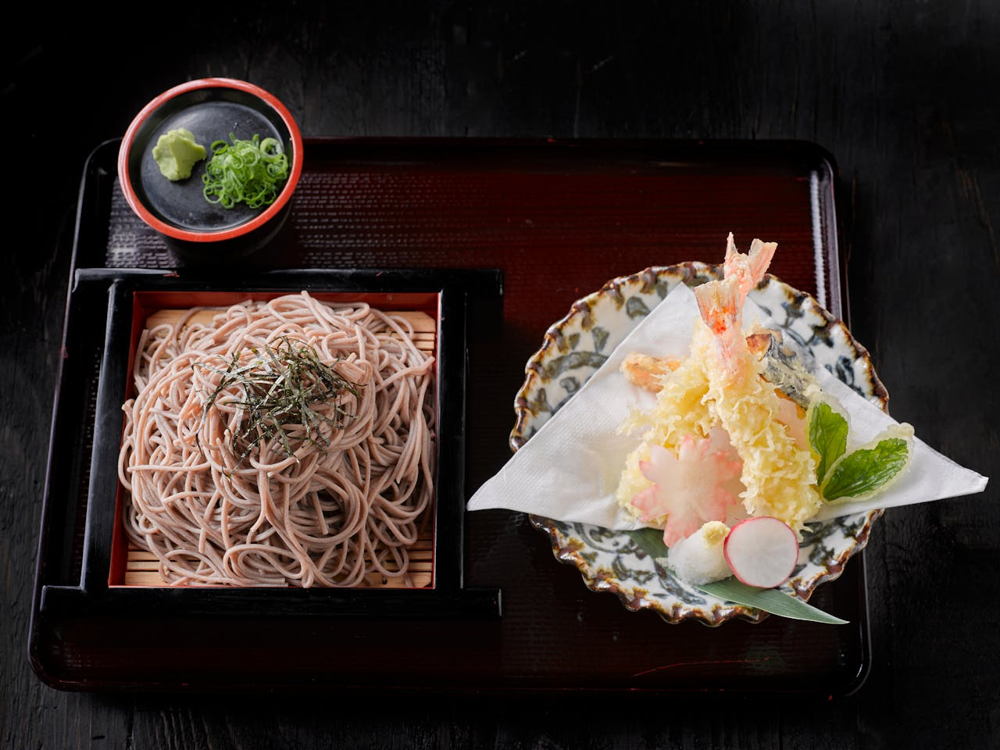
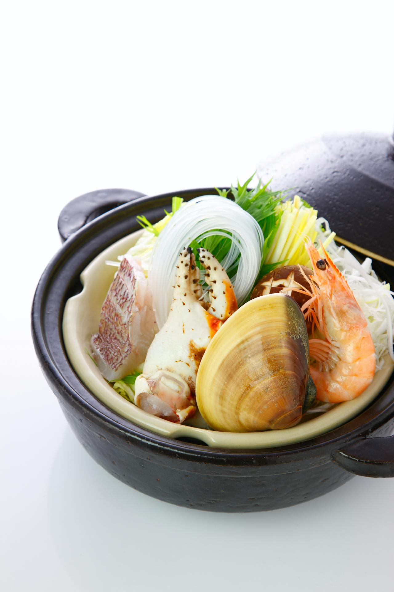

Sushi

Ingredientes do sushi
- 500g de arroz japones cozido e temperado com açúcar, vinagre de arroz e glutamato de sódio
- Fatias finas de atum cru
- Fatias finas de salmão cru
- Fatias finas de camarão cru
- Fatias finas de beringela refogada no azeite e no alho
Modo de preparo
Faça pequenos retâgulos de arroz que devem ter o comprimento da medida do seu dedo indicador e coloque as fatias de salmão, lula, camarão e beringela sobre elas. Disponha todos em uma travessa comprida e enfeite com fatias de gengibre em concerva acompanhada de uma bolinha de raiz forte.
Lamen

Ingredientes do sushi
- 250g de macarrão instâtaneo cozido
- um ovov cozido cortado ao meio
- 2 fatisa de kamaboku(embutido de peixe)
- Lombo de porco cozido em água e sal depois grelhado
- 10g de cebolinha picada
- 15g de wakame(alga)
- 500mL de água
- 10g de hondashi(glutamato monosódico com sabor de peixe)
- 30g de misso(pasta de soja fermentada)
Modo de preparo do Lamen
Em uma panela ferva a água e depois acrescente a pasta de misso e acrescente o hondashi e deixe ferever por 3 minutos. Em um recipiente de cerâmica coloque o caldo e depois coloque o macarrção já cozido e por cima dele coloque as duas fatias de porco grelhada, ao lado da carne coloque a metade do ovo cozido as duas fatias de kamaboku, o wakame e por fim coloque um pouco de cebolinha por cima, sirva ainda quente.
Gyoza e Karaage com soja cozida

Ingredientes da massa de gyoza
- 300g de farinha integral
- 200mL de leite
- 3 ovos
- sal a gosto
Modo de preparo da massa
Misture a farinha, o leite, o sal e os ovos, misture bem ate abter uma massa homogênia. Faça bolinhas e abra a massa em formato redondo e reserve.
Ingredientes do recheio do gyoza
- 100g de alho moído
- 50g de cebola ralada
- 5mL de azeite
- 300g de carne de porco moído
- 150g de nirá
- sal a gosto
Modo de preparo do recheio
Em uma panela esquente o azeite, frite o alho e a cebola em seguida acrescente a carne de porco, acrecente o sal e o nirá, assim que estiver cozido, espere esfriar.
Montagem do gyoza
Coloque 5g do recheio nas massas abertas e feche-os. Depois coloque-os em uma frigideira e cozinhe-os, espere a água secar de doure os dois lados do gyoza e sirva com molho de soja. E para acompanhar frite uma porção de frango(receita na página das comidas feitas com airfryer) e também uma porção de soja verde cozida.
Sobá com tempurá de camarão

Ingredientes do sobá
- 250g de macarrão de sobá cozido
- 10g de nori(folha de alga temprada) picado
- 200mL de caldo de molho de soja com hondashi
- 20g de cebolinha picada
Modo de preparo do Lamen
Em uma panela ferva a água e cozinhe o macarrão. Coloque o macarrão em um recipiente e coloque um pouco de nori picado, sirva com o caldo que deve estar em um recipiente menor e com um pouco de cebolinha.
Ingredientes do tempurá
- 250g de farinha integral
- 50mL de água
- 100g de amido de milho
- 200g de camarão
- Sal a gosto
Modo de preparo do tempurá
Em uma tigela misture a farinha, o sal, a água e o amido de milho misture bem e depois mergulhe os camarões nessa massa e frite-os na airfryer por 5 minutos à 2000C, sirva ainda quente com a porção de sobá.
Nabe

Ingredientes do Nabe
- 200g de alho poró cortodaor em 5cm, aproximadamente
- 200g de Mizuna(uma variedade de couve Asiático)
- 1/4 de acelga cortado em 5cm, aproximadamente
- 150g e cogumelo enoki
- 150g de bifun (macarrão de arroz)
- 1/4 de fatia de Tai(um peixe)
- 1 braço ce caranguejo
- 1 mexilhão tamanho médio
- 1 camarão tamanho grande com cabeça
Modo de preparo
Em uma panela de crâmica de 30cm de diâmetro coloque o alho poró, o mizuna, a acelgao enoki, o bifun, o tai, o caranguejo e o camarão, coloque-os uma ao lado do outro e reserve.
Ingredientes do caldo do Nabe
- 100g de flocos de katsuobushi(concerva seca de atum fatiadas bem finas)
- 150mL de mirin(saquê cilinário)
- 30g de glutamato monossódico
- 5g de hondashi
- 5mL de óleo de gergilim
- 200mL de molho de soja
- 100g de pasta de soja fermentada(missô)
- 400mL de água
Modo de preparo do caldo do Nabe
Em uma panela coloque o katsuobushi e faça a moagem com a mão para que ele fique em pedaços pequenos, depois acrescente o mirin, o glutamato, o hondashi, a paste de soja e a água. Dpois que o caldo começar a ebulir ferva-o por cinco minutos e coloque-o na panela com os ingredientes do Nabe, tampe-o e deixe cozinhar por 15 minutos, abra a tampa e coloque o óleo de gergilim, depois sirva.